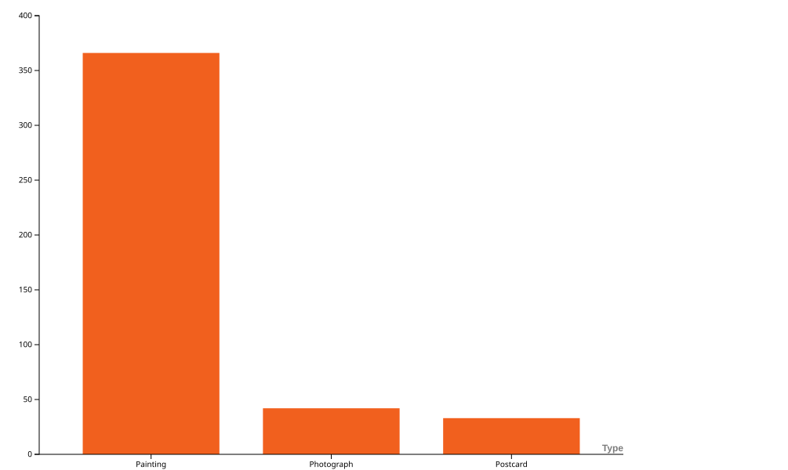
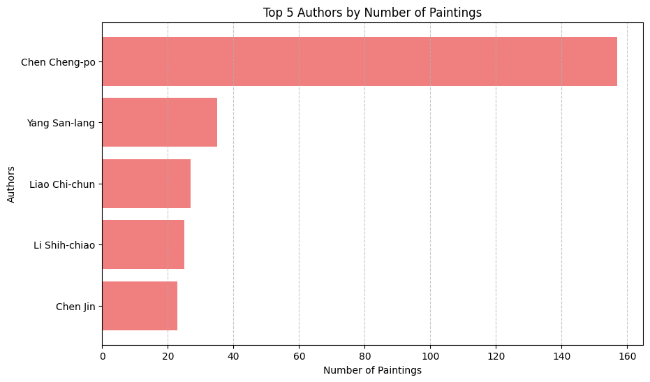
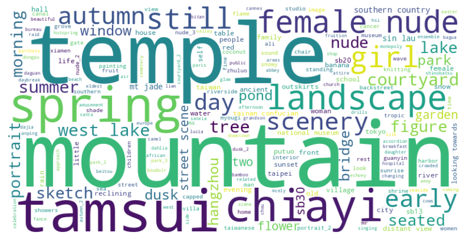
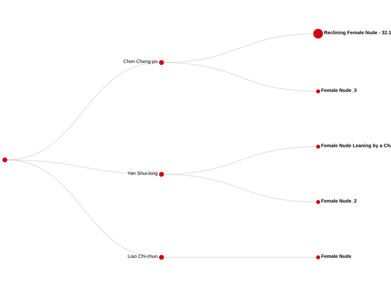

The Story
1895 - 1945
The Taiwanese Artists
The developing of art movements
Artistic production in Taiwan (1895-1945)
The most influential Taiwanese artists
Chen Cheng-po was undoubtedly the most prolific artist of his time.
In the chart on the side we can see the distribution of artwork for each artist. Our database in this case includes, in addition to paintings, also photos and postcards.
Let's refine our analysis and focus only on the production of paintings.
Which kind of artistic objects?
In the above chart we are showing the overall amount of artistic objects in the dataset.
It includes:
- Paintings
- Photographs
- Postcards
We can see that the Paintings are the majority of artworks, so we will explore them, filtering our search by this type.


Top 5 Artists - number of paintings
In this chart we focus only on paintings and we are also looking at the first top 5 authors.
It is confirmed that Chen Cheng-Po produced the highest number of paintings.
Top 5
Chen Cheng-Po has been the artists that produced the most in the period of reference: Japanese colonial period (1895-1945).
- Chen Cheng-Po: 157 paintings
- Yang San-lang: 35 paintings
- Liao Chi-chun: 27 paintings
- Li Shih-chiao: 25 paintings
- Chen Jin: 23 paintings
Almost 59% of the painting's production in the period of reference in Taiwan has been done by Chen Cheng-Po
The predominance of Chen Cheng-Po
The 3 Artists which produced most
A comparison
We can see in the following histogram the production frequency comparison per year. Cheng-Po, Yang and Liao number of paintings.

{kind=link}
{kind=link}
{kind=link}
The Chen Cheng-Po artistic production
[ASDC.owl data source] SPARQL query result
By looking at the Chen Cheng-Po paintings production distributed by year in the following bar chart, we can notice that:
- In 1934 he produced much more compared to all the other years
- There have been periods in which no painting has been produced, i.e.between 1916 and 1921
Geospatial Analysis of Chen Cheng-po's Paintings
Then we refocused on Chen Cheng-po, the most prolific artist in the dataset, and asked ourselves in which locations the highest number of his paintings can be found in order to map his artistic production.
These results indicate that Jiayi (Chiayi) holds the highest number of paintings (21) by Chen Cheng-po, which is not surprising given that he was born and had a strong connection to the city. His works often depicted scenes from his hometown, reflecting its landscapes and daily life.
Hangzhou (9 paintings) follows as the second most frequent location. This suggests a significant period of influence or artistic production in Hangzhou, possibly during his studies or travels in China.
Tamsui (8 paintings), a historically and culturally rich area in northern Taiwan, appears next. Its scenic waterfront and colonial architecture may have inspired multiple works.
Tainan (4 paintings) and Taipei (3 paintings) show a lower presence, but their inclusion highlights that Chen Cheng-po also explored and painted in other important Taiwanese cities.
Overall, these numbers suggest a strong personal and artistic link to Jiayi, while also reflecting his broader engagement with different cultural and artistic environments.Topical Analysis
The results show a series of recurring keywords in the titles and the subjects of the paintings, providing insight into the most represented themes.
- Recurring themes: Among the most frequent words, we find landscape elements such as mountain, lake, temple, scenery, and landscape. This suggests a strong interest in depicting nature and outdoor environments.
- Human figures: Terms like nude, female, and girl indicate the presence of portraits and studies of the human body, with a particular focus on female figures.
- Specific locations: Some geographical names like Tamsui and Chiayi suggest a connection to Taiwanese settings, confirming a link to the local context.
- Seasons and times of the day: Words like spring, autumn, summer, and day may indicate attention to atmospheric and seasonal changes in the paintings.
- Other urban and architectural elements: Terms such as street, courtyard, and temple also suggest an interest in scenes of daily life and traditional architecture.


Female Nude subject
We have been looking at the painting's topic of female nude and we found it in all the three most productive artists.
Chen Cheng-Po proportionally to the high number of artworks, produced 7 paintings with female nude subjects.
But the female nudes appeared also in 2 artworks by Yan Shui-long.